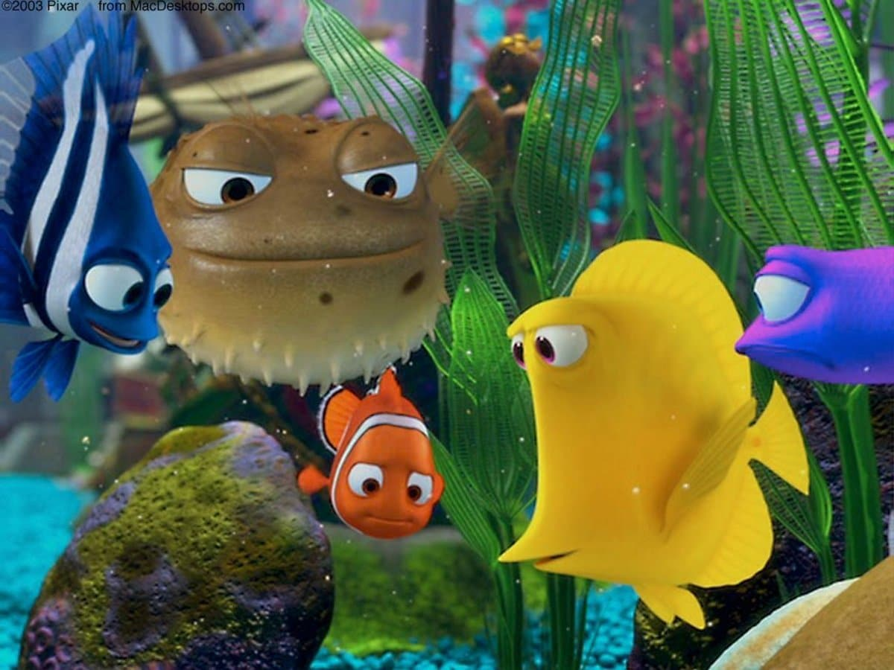
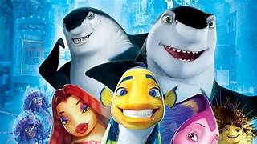
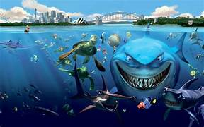
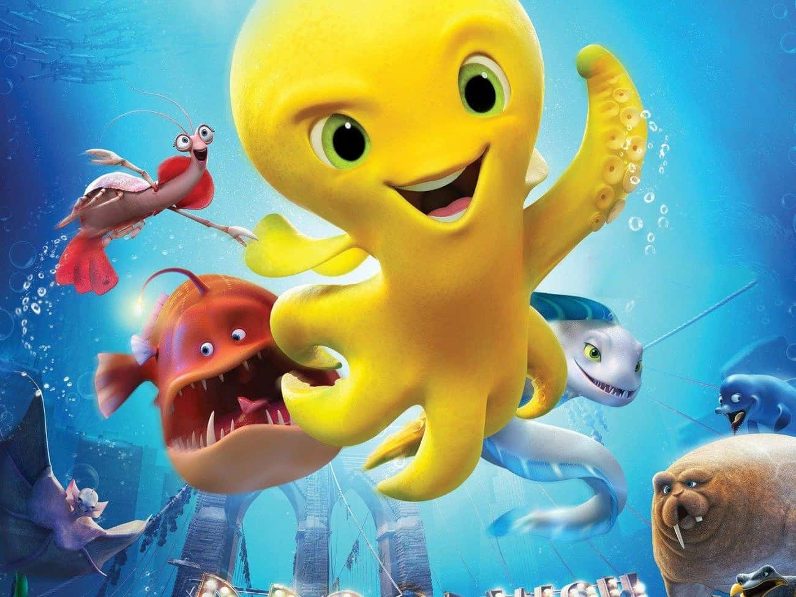

Nemo Fish
A clown fish, is overly cautious with his son, Nemo who ha a foreshortened fin. When Nemo swims too close tpo the surfece to prove himself, he id caught by a diver, and horrified Markin must set out to find him. A blue reef fish named Dory joins Marlin and complicates the encounters with sharks, jellyfish and a host of ocean dangers. Meanwhile, Nemo plots his escape from a dentist's fish tank.
Similar Movies

FishTales
Fishtales is a 2007 family comedy film

Shark
these films deliver suspense, scares, and sometimes a bit of campy fun.

Deeps
Deep is a 2017 computer-animated feature film